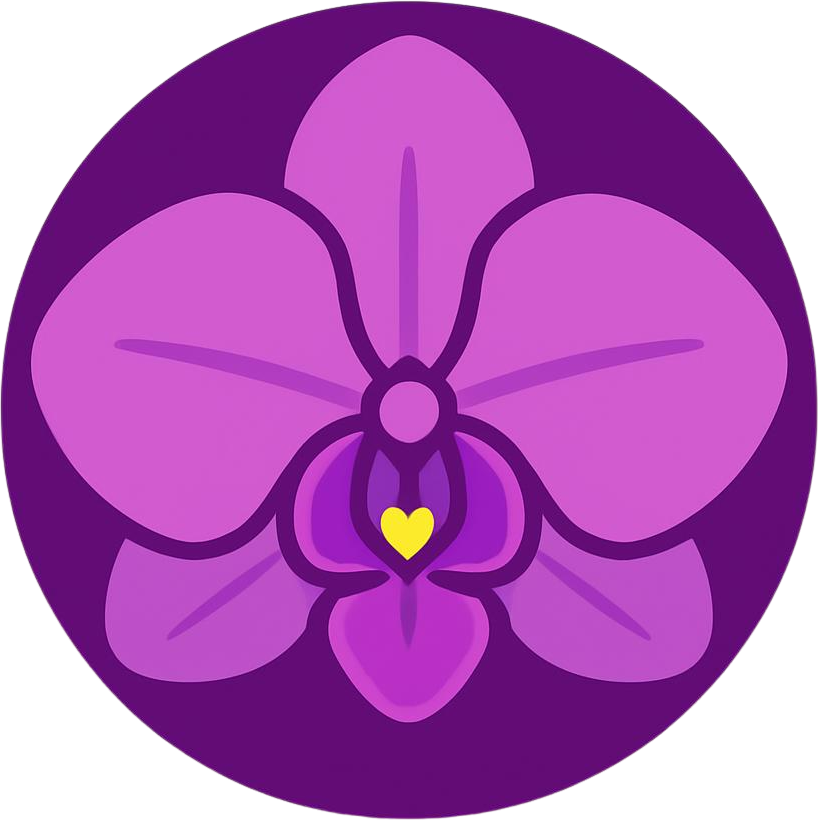

Orchid - Personal Finance Tracker
A personal finance tracker for logging and reviewing income/expenses across multiple accounts and categories.
Design Decision
Uses soft-delete instead of removing rows because transactions reference accounts and categories through foreign keys and deleting either would break historical records.
Added editability across accounts, categories, and transactions in order for users to correct an entry that was valid but factually wrong.
Implemented JOINs across the three tables for functions that need the data from all of them at once such as get_all_transactions
Limitation
Transactions are hard-deleted, leaving no audit trails and no records of the original entry, unlike accounts and categories whose records are preserved.

Technology Used
- Python
- Flask
- SQLite3
- Jinja2
- HTML
- CSS
- JavaScript